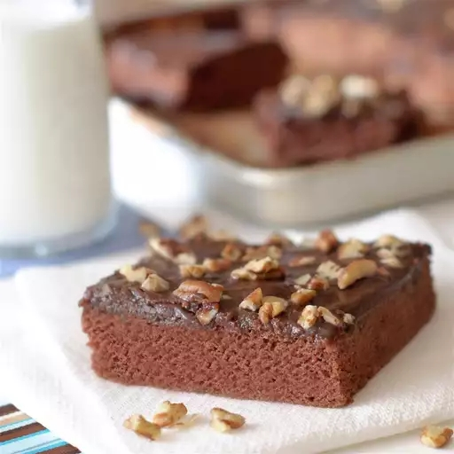

Chocolate Cake

Description
This Chocolate cake recipe is originally pulled from here, courtesy of Allrecipes. This is a simple Chocolate sheet cake.
Ingredients
- 2 cups white sugar
- 2 cups all-purpose flour
- 1 cup butter, melted
- 1 cup water
- 3 tablespoons unsweetened cocoa powder
- 1 teaspoon baking soda
- ½ cup buttermilk
- 2 eggs
- 1 teaspoon vanilla extract
- ½ cup butter
- 3 tablespoons unsweetened cocoa powder
- 5 tablespoons milk
- 1 (16 ounce) box confectioners' sugar
- 1 cup chopped pecans
Directions
- Preheat an oven to 350 degrees F (175 degrees C). Grease an 11x17 jelly roll pan.
- Mix white sugar and flour in a large bowl. Combine 1 cup butter, water, and 3 tablespoons cocoa powder in a small saucepan; stir over medium heat until butter is melted and mixture is well combined. Pour melted butter mixture over sugar and flour; beat well. Beat in baking soda, buttermilk, eggs, and vanilla extract. Pour batter into prepared pan.
- Bake in preheated oven until a toothpick inserted into the center of cake comes out clean, 20 to 25 minutes. Remove from oven and allow to cool on a wire rack.
- Combine remaining 1/2 cup butter, 3 tablespoons cocoa powder, and milk in a small saucepan; stir over medium heat until butter is melted and mixture is well combined. Beat powdered sugar into the butter mixture, mixing until frosting is smooth. Stir pecans into frosting and pour over cooled cake.